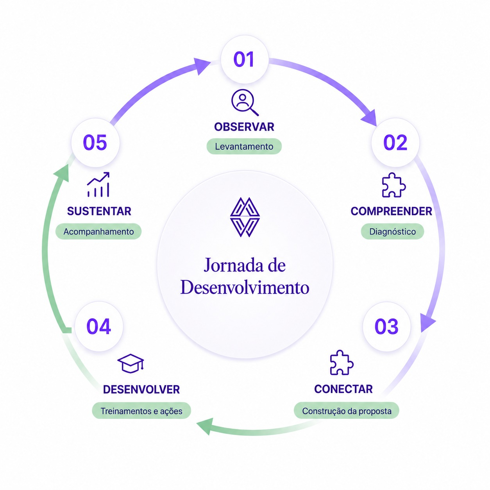

Diagnóstico organizacional
Compreendemos o contexto, as necessidades e as prioridades da organização antes de construir qualquer jornada de desenvolvimento.
Compreendemos a realidade de cada organização para transformar desafios em desenvolvimento, prática e resultados.
Diagnóstico organizacional, NR-1 e riscos psicossociais
Futuros líderes, primeira liderança e mentorias
Palestras e experiências de desenvolvimento
Quando liderança, cultura, comunicação e processos deixam de se conectar, os efeitos aparecem no clima, nas relações e nos resultados.
O sintoma pode surgir em um ponto. A causa costuma estar no sistema.
A organização pode já ter valores bem definidos, mas ainda enfrentar o desafio de traduzi-los de forma consistente nas relações e práticas do dia a dia.
Sem diagnóstico e acompanhamento, o conteúdo dificilmente transforma a rotina.
Responsabilidades pouco claras geram decisões inconsistentes e equipes sem direção.
Falhas de comunicação, baixa autonomia e relações fragilizadas afetam pessoas e resultados.
Uma jornada contínua que transforma a leitura da realidade em desenvolvimento e prática.

Conhecer a rotina, as pessoas e a cultura na prática.
Identificar causas, padrões e prioridades.
Relacionar pessoas, liderança, cultura e estratégia.
Construir soluções a partir do diagnóstico.
Acompanhar a aplicação para transformar aprendizado em prática.
Desenvolvimento construído a partir da realidade de cada pessoa e organização.
Compreendemos o contexto, as necessidades e as prioridades da organização antes de construir qualquer jornada de desenvolvimento.
Solução Belbi
A prevenção de riscos psicossociais não se resume à aplicação de um questionário ou à realização de um treinamento isolado.
É preciso compreender como o trabalho acontece, preparar as lideranças, definir prioridades e acompanhar continuamente a prática.
Prevenção exige compreensão, planejamento e continuidade.
Preparamos líderes e gestores para compreender seu papel na prevenção dos riscos psicossociais e na construção de relações de trabalho mais saudáveis.
Realizamos processos de escuta e análise para compreender como liderança, cultura, comunicação e práticas de gestão afetam as pessoas.
Organizamos as informações levantadas para identificar necessidades, estabelecer prioridades e orientar ações coerentes com a realidade da organização.
Apoiamos o desenvolvimento das ações e acompanhamos sua aplicação para que a prevenção não termine em uma iniciativa pontual.
A NR-1 exige gestão. A Belbi prepara lideranças para torná-la possível.
A atuação da Belbi acontece em parceria com Recursos Humanos, Saúde e Segurança do Trabalho e lideranças, respeitando as responsabilidades técnicas e legais de cada área.
Toda transformação começa pela compreensão. Deixe seus dados e entraremos em contato para agendar uma conversa.
Ou fale direto pelo WhatsApp:
Falar pelo WhatsAppToda organização carrega desafios.
em desenvolvimento e resultados.
Uma conversa é suficiente para compreendermos sua realidade e construirmos, juntos, o que faz sentido para pessoas, liderança e negócio.
Conversa rápida. Sem compromisso.
© 2025 Belbi. Todos os direitos reservados.